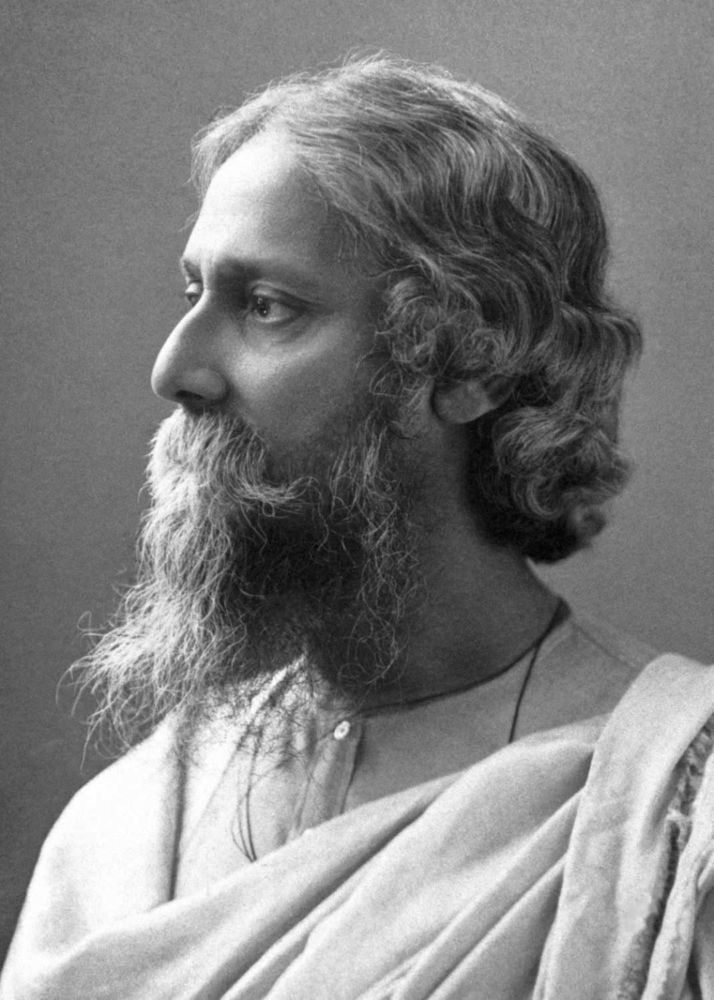

Rabindranath Tagore, also known as Gurudev, was a renowned poet, writer, philosopher, and musician from India. He was the first Asian to be awarded the Nobel Prize in Literature in 1913 for his collection of poems, "Gitanjali" (Song Offerings).
Tagore's works are celebrated for their profound philosophical and lyrical content. His poetry and songs have left an indelible mark on Indian literature and culture.
"Let your life lightly dance on the edges of Time like dew on the tip of a leaf."
